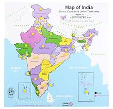

| Home > Statewise > |
|
|  |
Agriculture Data
|
Available Data : |
Analysis Done : |
|
[01] Andaman and Nicobar Islands [02] Andhra Pradesh [03] Arunachal Pradesh [04] Assam [05] Bihar [06] Chandigarh [07] Chhattisgarh [08] Dadra and Nagar Haveli [09] Goa [10] Gujarat [11] Haryana [12] Himachal Pradesh [13] Jammu and Kashmir [14] Jharkhand [15] Karnataka [16] Kerala [17] Madhya Pradesh [18] Maharashtra [19] Manipur [20] Meghalaya [21] Mizoram [22] Nagaland [23] Odisha [24] Puducherry [25] Punjab [26] Rajasthan [27] Sikkim [28] Tamil Nadu [29] Telangana [30] Tripura [31] Uttar Pradesh [32] Uttarakhand [33] West Bengal ------------------------------- total no. of data set = 33 ---------------------------- |
[01] Andaman and Nicobar Islands
|